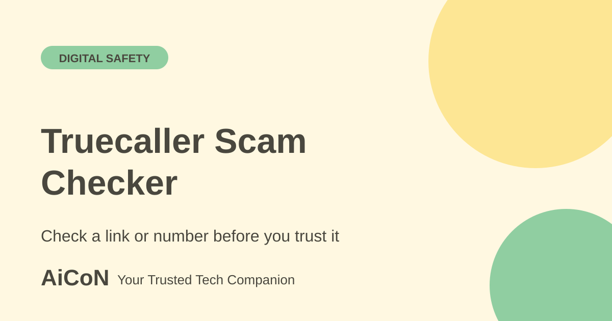

Truecaller Scam Checker: check a link or number
Truecaller Scam Checker is a free web tool. You enter a phone number or link and see whether it looks risky, plus posts from people who met similar scams. It is a warning aid, not a guarantee.

What is it?
Truecaller says Scam Checker is a free tool that tells you whether a phone number or URL is likely safe or risky to engage with. It can also search for a type of scam and show posts from users who met it. Results come from Truecaller's scam database and its community posts.
How to use it, step by step
- Open truecaller.com/scam-checker. You do not need an account, per Truecaller.
- Paste the phone number, the link or the scam type you want to check.
- Read the result. Truecaller says you can see Safe or Potential Fraud results for numbers and URLs without logging in.
- Read the community posts, if any, to see how others met the same number or message.
- Do not click the suspicious link to test it. Check it here instead.
- If you lost money, call 1930 right away. See our first-hour guide.
What it can and cannot do
- It is free for everyone, with or without a Truecaller account.
- Name details for a phone number need the Truecaller app on your phone.
- The page shows posts written by Truecaller users. Those are unverified opinions, and some are in Hindi or mixed languages.
- The original AiCoN post said it expands shortened links and works on Android in India. We could not confirm those in Truecaller's own text, so treat them as unverified.
What changed since the short post?
The current official FAQ confirms free web checking without an account. The earlier headline's shortened-link expansion and Android-in-India details remain unverified.
Frequently asked questions
Do I need the Truecaller app?
No. The web tool works without an account.
Is it free?
Yes, per Truecaller.
Can it check a WhatsApp message?
It checks numbers, links and scam types. Paste the link or number from the message.
Sources: Truecaller Scam Checker. Checked 6 October 2026.